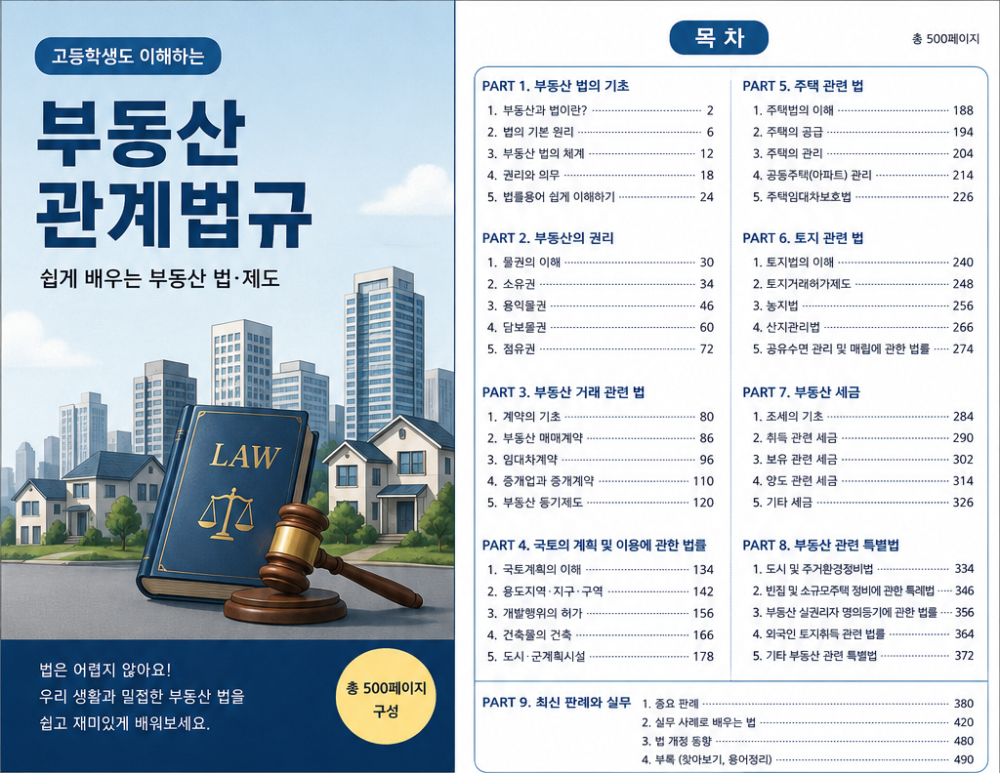
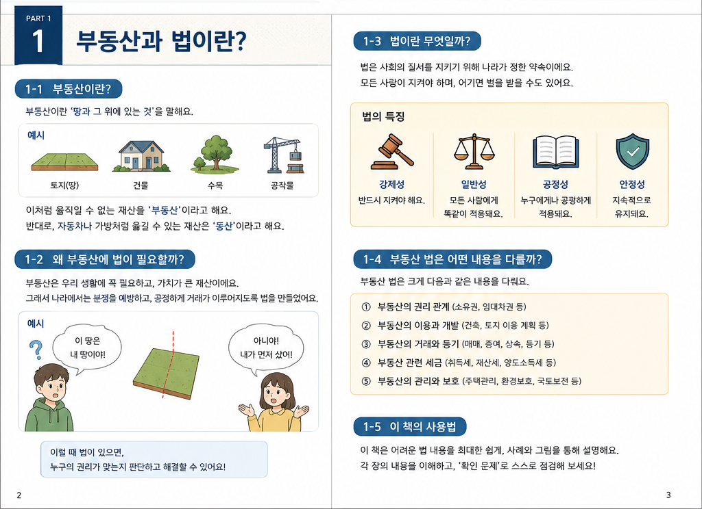

총론: 부동산 법제의 기초
총론: 부동산 법제의 기초
부동산 법제의 기초는 토지와 건물이 왜 민법상의 재산이면서 동시에 공법상 규제를 받는지 이해하는 단원입니다. 부동산과 법의 관계, 부동산 법체계의 기본 원리, 법령 간 상호작용을 먼저 잡으면 뒤의 국토계획법, 건축법, 공시법, 농지법, 산지관리법을 훨씬 쉽게 읽을 수 있습니다.


1. 왜 총론을 먼저 공부하는가
부동산은 단순한 물건이 아닙니다. 토지는 국민 생활의 터전이고 생산ㆍ교통ㆍ환경ㆍ주거의 기반이며, 건물은 안전과 생활공간에 직접 연결됩니다. 그래서 부동산은 민법상 소유권의 대상이면서도 국토계획, 건축, 농지ㆍ산지 보전, 공시, 세금, 보상 같은 여러 공법 규율을 함께 받습니다.
예를 들어 어떤 사람이 자기 토지를 소유하고 있다고 해서 언제나 원하는 건물을 지을 수 있는 것은 아닙니다. 그 토지가 어떤 용도지역에 있는지, 개발행위허가가 필요한지, 건축법상 도로와 대지 요건을 갖추었는지, 농지나 산지라면 전용허가가 필요한지까지 확인해야 합니다.
소유권, 임대차, 저당권, 상속처럼 부동산에 대한 사적 권리관계를 정리합니다.
국토계획, 건축, 농지ㆍ산지, 환경, 보상 절차가 이용 가능성과 제한을 정합니다.
거래, 개발, 보상 사건에서는 권리관계와 인허가, 공시, 세금이 함께 움직입니다.
핵심 개념
- 부동산은 사적 재산이면서 공공성이 강한 제한된 자원입니다.
- 토지 이용은 국토계획, 건축, 농지ㆍ산지, 환경 법령의 제한을 받을 수 있습니다.
- 부동산 권리 공시는 등기와 지적공부를 통해 거래 안전을 확보합니다.
시험 포인트
- 부동산 소유권과 공공복리 제한을 함께 봅니다.
- 국토계획법, 건축법, 공시법, 농지법, 산지관리법의 역할을 구분합니다.
- 하나의 사례에서 적용 법령을 순서대로 찾는 연습이 중요합니다.
복습 질문
- 총론: 부동산 법제의 기초에서 가장 먼저 확인해야 할 기준은 무엇인가요?
- 이 단원이 부동산관계법규의 다른 단원과 연결되는 지점은 어디인가요?
- 기출 선택지에서 주체, 요건, 효과 중 무엇을 바꾸면 오답이 되나요?